Centaur Walker
Horse hindquarters on two Jansen-linkage legs that pin to your hip belt or your bike's seatpost. The ground turns the legs as you move, so one hoof is always down. Every part is off the shelf at Home Depot. Below: the three current pages, then every earlier version, numbered in the order it was made.
Current
Assembly, axle, belts and reference leg together. Turn the tire, inspect the axle, and see how a slipping connection stops the leg.
Turn the input, inspect the cutaway, and separate support friction, nut travel and torque transfer. Compare bare metal, a sleeved concept and slipping connections.
Asymmetric shaft, descending roller straps, independent tire position and interference candidates. No-weld connection requirements; measured dimensions still needed.
Razor deck, punched straps, wheel hubs, shaft supports and layered leg. Inspect proposed repairs and exploded pivots; enter actual measurements.
The two cords as built, from the photos: where each one wraps, what it grips, how hard it pulls, which way everything turns, and what slips first under the legs’ load. Drag pulleys, change surfaces and tension, then run the bench tests.
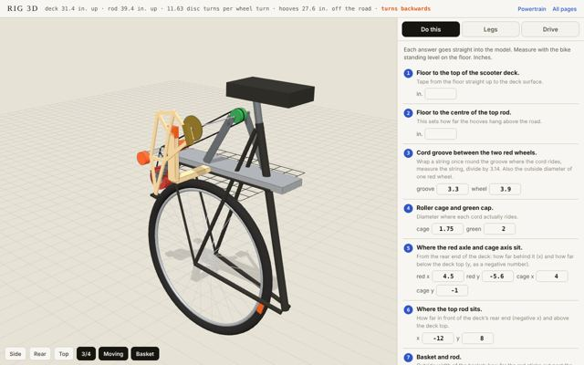
The drive as one lift-off module, from photo measurements: red wheels on arms that swing from the cage axle, cage on a 3/8 axle with two tape tracks, bucket-lid pulley, centre bearing post. Drive-forces view with belt tensions, rpm and torque; 15 build steps; what breaks first.
Actual workshop drive: red scooter wheels, orange cage and top shaft. Compare belt routes, enter measurements and resolve shaft retention.
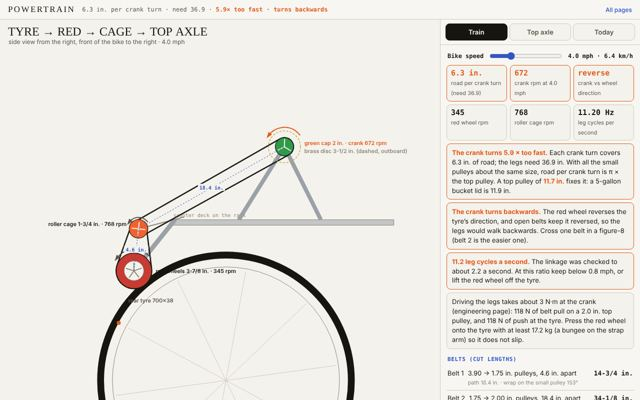
The built velocipede drive: tyre, red scooter wheels, roller cage, top axle. Ratio, direction, belt lengths, and the top-axle fix.
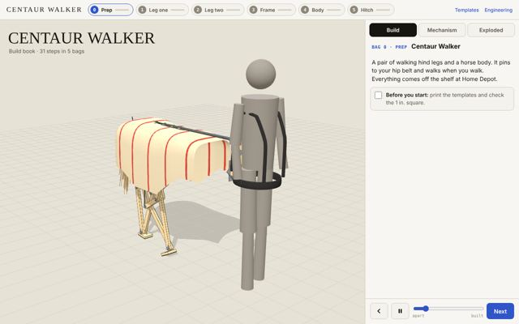
LEGO-style build book with Build, Mechanism and Exploded modes.
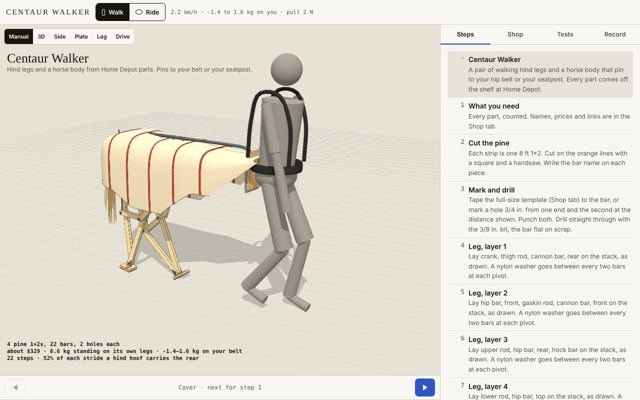
The engineering instrument: every test computed, shop list, drive and traction. Layers re-planned so bolt heads clear, crank riser, 19/32 in. hub ring.
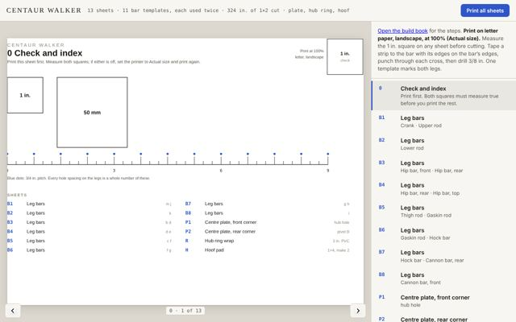
13 full-size letter sheets: every bar with its hole crosses, plate corners, hub ring wrap, hoof pad.
Leg Rig 4 versions
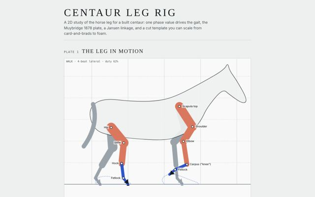
2D study of the horse hind leg. One phase value drives the gait; the Muybridge 1878 plate, a Jansen linkage, and a cut template that scales from card and brads to foam.
Horse, walk and bike modes, an evolve view, and gait, layer and build panels.
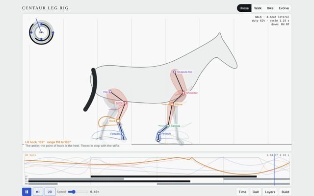
Adds a 2D view beside the horse, walk, bike and evolve modes.
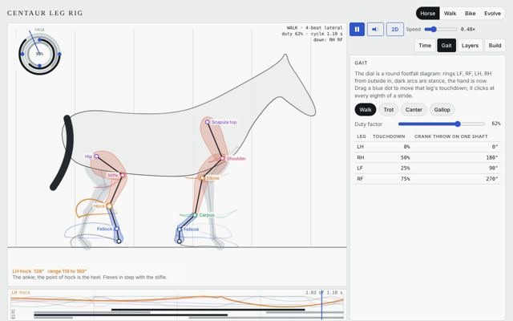
Last version of the 2D rig.
Workshop 2 versions
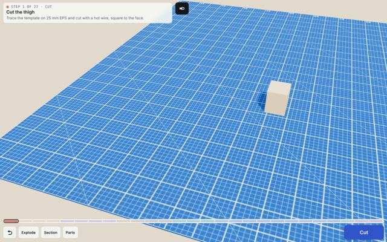
First 3D bench for the leg: explode, section, parts and cut views.
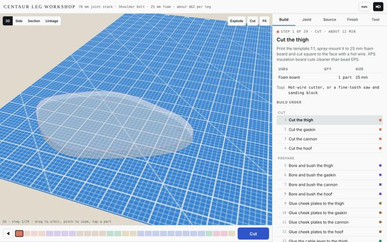
3D bench in millimetres: 3D, side, section, linkage, cut, build, joint, source, finish and test views.
Studio prompt 1 version
Studio 1 version
Velocipede 6 versions
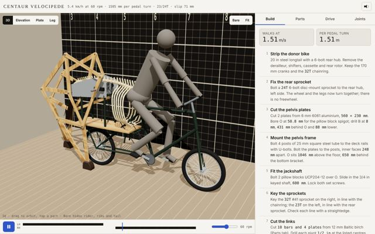
Legs driven from the bike: a roller on the rear tyre, gears and a chain to the leg crank. 3D, elevation, plate and leg views.
Second pass at the bike drive: build, parts, drive and joint panels.
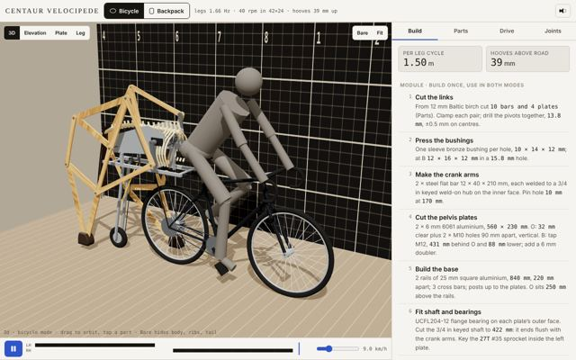
Adds the backpack version alongside the bicycle version.
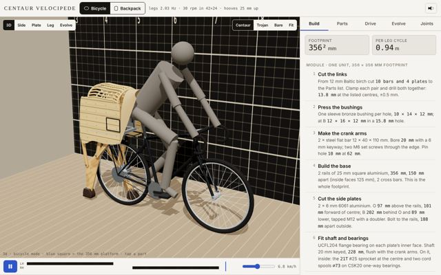
Adds an evolve view and centaur and Trojan horse bodies.
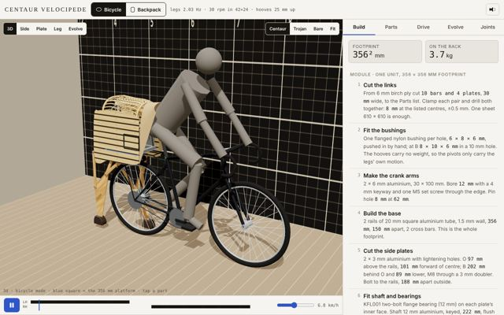
Smaller, lighter backpack and body.
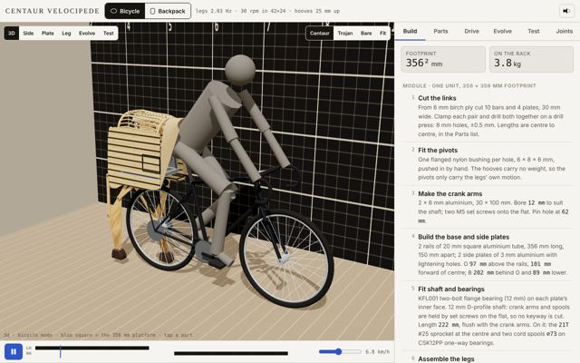
Adds the test bench: engineering, price, strength and looks scored side by side.
Walker 5 versions
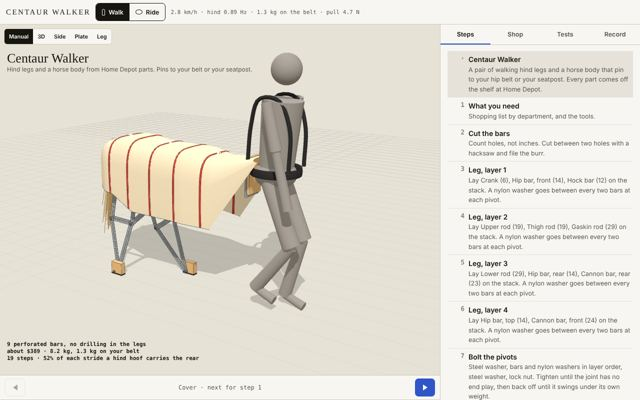
New design from scratch: hindquarters on two ground-driven Jansen legs, pinned to your hip belt or seatpost. Manual, 3D, side, plate and leg views; steps, shop, tests and record.
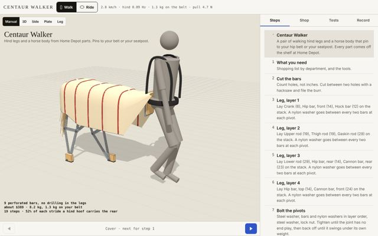
Revision of v1 before the full rewrite.
Rewrite: pine legs on a centre plate and a drive view with torque, grip, weight on you and roll.
Phone layout: step text and callouts kept off the model.
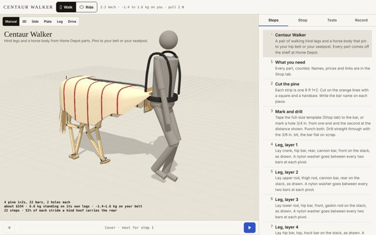
1×4 hoof pad flush with the inner bar face; 15-1/4 × 13 in. plate.
Build book 1 version
Centaur Rig line foam and plywood Jansen legs · 2 current pages, 7 versions
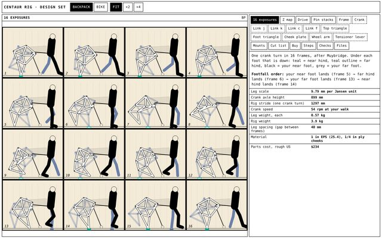
Build drawings for two rigs, Backpack and Bike: 16 exposures, Z map, drive, pin stacks, every part dimensioned, mounts, cut list, buy list, steps and checks.
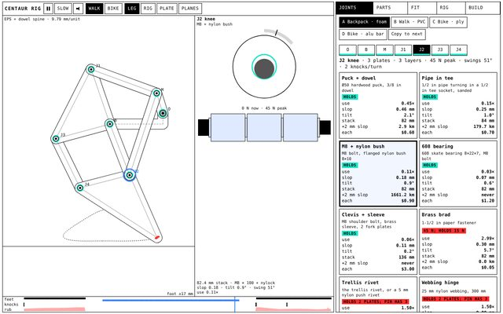
Leg engine for walking or a bike rack: Muybridge plate, joints under load, real stock and joint types, part drawings, stacks and buy list.
Centaur Rig 7 versions
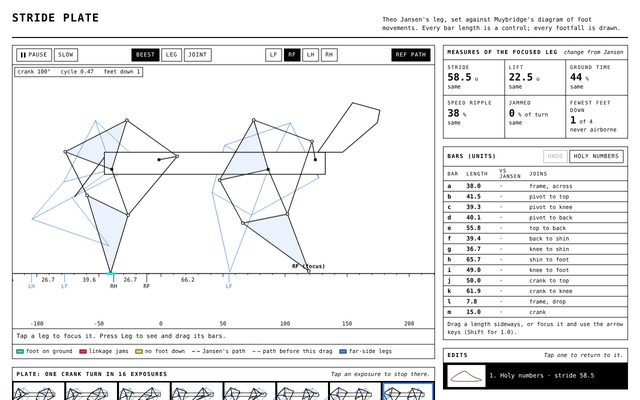
Redesign of the GeoGebra Jansen horse around six principles: hidden state shown, multiple views, direct manipulation, semantic zoom, constrained play.
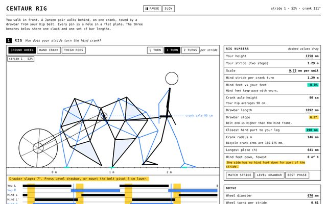
Every joint followed through time; joints made as holes in flat plates, brad-puppet style; ground wheel, hand crank and thigh-rod drives.
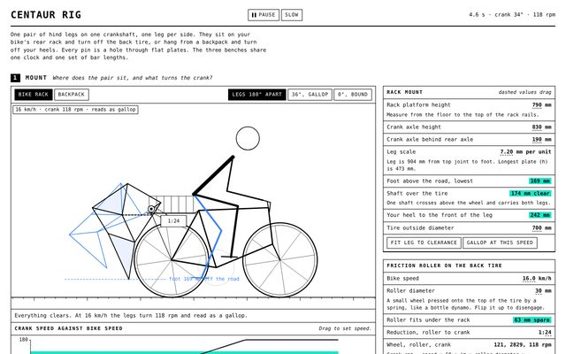
One pair of legs only, on a backpack or the bike rack; friction roller off the rear tyre.
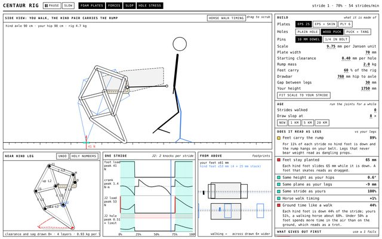
One-screen physics bench: feet on the ground in the plane of your feet, breakage, slop clouds and loose tolerances.
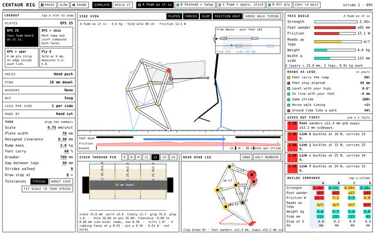
Builder bench: layer stacks and thickness, pin friction, sound, swappable variants A–D, tolerances and a workshop tab.
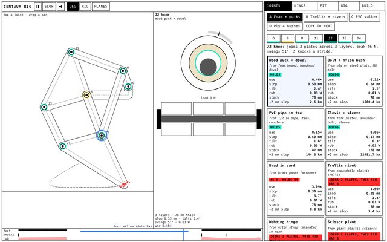
Phone-first joint lab: sim and part always on screen; nine joint types compared at every pin.
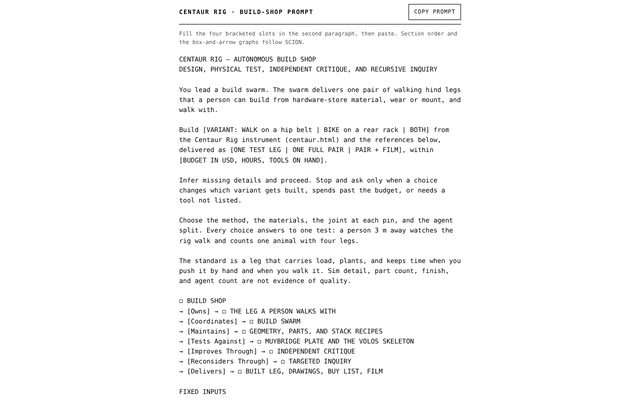
The SCION prompt rewritten for this rig: the knee test piece, the Muybridge and Volos references, independent checkers.